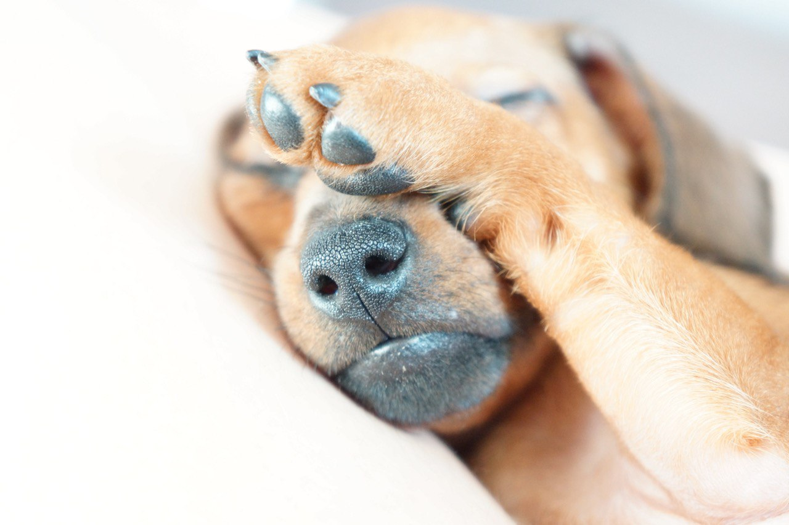

Такса – пример удивительного контраста между непримечательной на первый взгляд внешностью и совершенством внутреннего содержания.
Краткая информация
- Название породы: Такса
- Страна происхождения: Германия
- Время зарождения породы: XVI век
- Вес: до 12 кг
- Рост (высота в холке): до 35 см
- Продолжительность жизни: 10-13 лет
Основные моменты
- Первоначально выведенная как помощник для норной охоты, такса и по сегодняшний день сохранила в себе лучшие свойства, присущие ее предкам – активность, смышленость, ловкость, бесстрашие и самостоятельность. Тем не менее, она прекрасно подходит для домашнего содержания.
- Собака требует соблюдения ряда правил: ей нельзя становиться на задние лапы, спрыгивать с высоты. Эти условности связаны с особенностями строения тела животного и направлены на то, чтобы избежать вредного воздействия на позвоночник и опорно-двигательную систему собаки.
- Такса – неутомимая собака, которая бесконечно предана своему хозяину. Будьте готовы к тому, что вам придется отвечать ей взаимностью и уделять общению со своим другом много времени. Если вы очень занятой человек или просто склонны к спокойному философскому времяпровождению, этот питомец не для вас.
- Прогулка для таксы – это всегда приключение. Причем выключить свой охотничий инстинкт собака и не пытается. Ее живо интересует все, что только движется, поэтому лучшим средством контроля во время прогулок будет поводок-рулетка. Без него пес в пылу охотничьего азарта может уйти очень далеко.
- Таксы хорошо относятся к детям. Главное, уследить, чтобы ваши домочадцы в порыве искреннего восторга и восхищения не навредили щенку, ведь маленькая таксочка, несмотря на отчаянно смелый нрав, все же еще очень хрупкое создание. Дружат представители породы даже с кошками, но им обычно требуется время для установления отношений.
- Таксе интересно всё, поэтому предметы, которые могут быть потенциально опасны для здоровья собаки (электропровода, бытовая химия, домашние растения), лучше загодя убрать в недоступное место. Мелкие вещи, которые щенок может ненароком проглотить, тоже уберите подальше.
- Такса – большой любитель покушать. А вот набирать лишний вес как раз-то и нельзя. Разработка сбалансированного рациона и соблюдение режима питания – одна из важнейших задач.